Suivi de la sécheresse dans les territoires insulaire du Pacifique
Rapport d’exécution technique
Sécheresse végétale, Pacifique Sud, Observation de la Terre
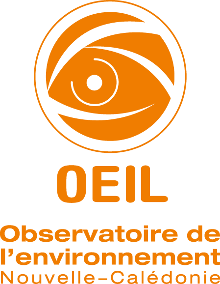
1 Contexte général du projet
Les évènements extrêmes de plus en plus présents dans le Pacifique (phénomènes El Nino & La Nina) ont des conséquences non négligeables sur les territoires insulaires. L’effet de la montée des eaux ou des épisodes de sécheresse est donc au centre des préoccupation dans de nombreuses îles du Pacifique (Vanuatu, Wallis-et-Futuna, Polynésie Française, etc.). Les évènements de sécheresse intenses ont des impacts indéniables sur la biodiversité, la ressource en eau et sur les cultures agricoles comme cela a pu être le cas en 2019 pour la Nouvelle-Calédonie.
Actuellement, le suivi et l’anticipation de ces épisodes de sécheresse se fait via des mesures météorologiques informant sur le déficit pluvieux et non pas sur le stress hydrique des plantes. Par ailleurs, les données sont uniquement disponibles sur quelques points de mesure et ne sont pas continues sur les territoires.
2 Description du projet “Suivi de la sécheresse dans les territoires insulaire du Pacifique”
Le projet proposé ici s’inscrit dans la continuité du travail mené dans le cadre du projet Space Climate Observatory, nommé EO4DroughtMonitoring1 sur la Nouvelle-Calédonie avec comme objectif principal de démontrer l’applicabilité et l’utilité d’un tel outil dans d’autres territoires insulaires du Pacifique. La démarche globale est ainsi de disposer d’un procédé adapté pour l’ensemble des territoires insulaires du Pacifique et qui pourrait par la suite être délivré en libre accès de façon opérationnelle en lien avec les acteurs centraux de la région.
Le projet présenté ici vise :
- à construire un indicateur de sécheresse végétale permettant de caractériser la situation actuelle mais aussi historique et prévisionnelle, en fonction des données disponibles, obtenues sur les différents plateformes satellitaires et des instruments météorologiques du territoires concernés,
- mettre en production l’indicateur sur la Nouvelle-Calédonie, l’objectif étant de démontrer le caractère opérationnel de la solution,
- décliner la chaine de production pour certains territoires de la région Pacifique,
- le valoriser à travers des interfaces et des services de consultation et de mise à disposition des données.
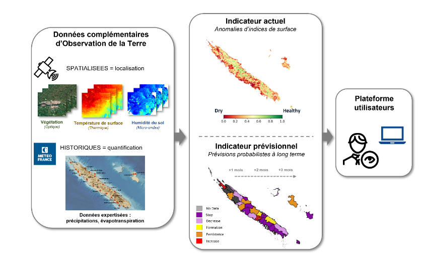
Cette solution fournit des données constituant une source d’informations importante dont les valorisations et apports peuvent être multiples : agriculture, gestion des ressources, sécurité civile (surveillance du risque incendie), état de l’environnement. Les produits satellites utilisés dans cet outil couvrent l’intégralité des territoires. L’ensemble des livrables est mis à disposition de la communauté sous licence open source type BSD2.
2.1 Parties prenantes
Le projet implique plusieurs partenaires techniques et scientifiques, notamment l’OEIL, INSIGHT, l’IRD Nouvelle-Calédonie, Météo-France Nouvelle-Calédonie, CSIRO, CPS, la Polynésie Française, Fidji et le Vanuatu.
Le travail est mené par 3 entités principales :
L’Observatoire de l’Environnement pour la Nouvelle-Calédonie (OEIL) réalise le suivi de l’environnement sur le territoire en fournissant, via leurs plateformes opérationnelles, plusieurs indicateurs et outils de surveillance environnementale. Porteur du projet, l’OEIL a le rôle de cadrage global du projet, de valorisation et de portage final de l’indicateur sécheresse développé pour la NC. Grâce à son expertise dans le domaine, il s’assurera également du bon déroulement du travail mené par les différents partenaires sur les aspects techniques, thématiques via un soutien scientifique du Conseil Scientifique de l’OEIL.
INSIGHT est une startup néo-calédonienne du Groupe CIPAC (Compagnie Industrielle du Pacifique) dédiée à l’observation de la Terre par imagerie spatiale. INSIGHT a été en charge des développements de l’indicateur de sécheresse biophysique sur la Nouvelle-Calédonie, en collaboration avec Météo-France NC au moment du projet SCO. Dans la présente étude, INSIGHT est en charge de la mise en production des différentes chaines d’indicateur sur la Nouvelle-Calédonie, d’études techniques et scientifiques, et des développements supplémentaires pour l’accès et le traitement d’images satellites sur tous les territoires identifiés.
L’IRD Nouvelle-Calédonie (UMR EspaceDEV) apporte un soutien scientifique et technique à ce projet. De par son expertise en Observation de la Terre dédiée à l’étude de l’environnement Néo-Calédonien, cet organisme de recherche suivra de près les développements réalisés pour aider au bon déroulement du projet.
D’autres acteurs ont été identifiés pour être sollicités au cours de l’étude afin de disposer d’un soutien technique et thématique : METEO-FRANCE NOUVELLE-CALEDONIE, en tant que le développeur actuel de la chaine des prévisions. Une convention avec Météo-France sur l’utilisation de la chaine en production et sur d’autres territoires a été signée (disponible en annexe \(\ref{sec-conv-MNF-OEIL}\))
CSIRO : expertise attendue dans l’exploitation des données Radar et du DataCube Australien.
CPS : expertise attendue sur l’exploitation du DataCube Digital Earth Pacifique.
La Polynésie Française : utilisateur potentiel des données d’indicateurs produites et collaboration attendue pour la mise à disposition de données météo in situ.
Le Vanuatu : utilisateur potentiel des données d’indicateurs produites et collaboration attendue pour la mise à disposition de données météo in situ.
AGENCE RURALE Nouvelle Calédonie : utilisateur potentiel des données d’indicateurs produites.
2.2 Méthodologie
La chaine de production sur la Nouvelle-Calédonie est présentée en Figure 1. La production de l’indicateur actuel est réalisée via trois sous chaines permettant d’accéder aux trois niveaux d’information sécheresse (communal, intra-communal, parcellaire).
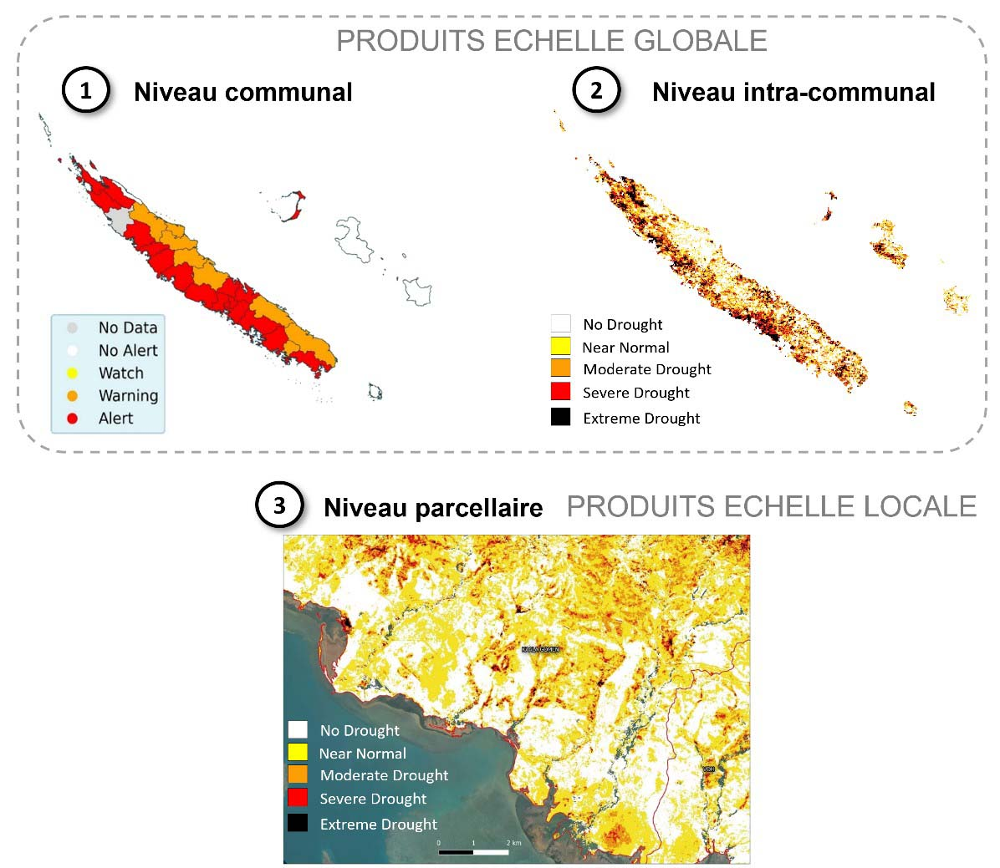
L’ensemble des chaines forme un système de suivi et de prévision de la sécheresse dans les territoires du Pacifique. Chaque chaine est composée de plusieurs étapes de traitement, de calcul et de contrôle qualité. Les données d’entrée sont issues de différentes sources (satellites, données météo in situ, etc.) et sont traitées pour produire des indicateurs de sécheresse végétale (VAI, VHI, MAI, prévision).
2.2.1 VAI : La chaine locale
La chaine locale fournit l’indicateur au niveau parcellaire (10 m), calculé à partir des indices NDWI issus de L7, L8, L9 et S2 préalablement pré-traités et calibrés. L’indicateur VAI (Vegetation Anomaly Index ; Amri et al., 2011 ; Peters et al., 2002) sera estimé par comparaison au référentiel selon l’équation
\[ VAI = NDWI - \frac{\overline{NDWI}} {\sigma NDWI} \]
avec \(\overline{NDWI}\) la moyenne et \(\sigma{NDWI}\) l’écart-type calculés pour une décade (10 jours), sur tout l’historique. Cet indicateur est centré en 0, avec des valeurs négatives indiquant un état de stress anormal, et des valeurs positives indiquant un état favorable. A noter que pour cette échelle spécifique, une phase de post-traitement peut être intégrée afin de filtrer les régions de sols nus ou à végétation dense pouvant être d’un intérêt moindre pour un suivi parcellaire. Cette étape peut être réalisée à partir d’indices de NDVI calculés à partir des mêmes images L7/L8/L9/S2, mais impliquant également, une calibration radiométrique.
2.2.2 VHI : La chaine globale
La chaine globale fournit l’indicateur au niveau intra-communal (1 km) à partir des indices MODIS (NDWI, LST). Ici, l’indicateur VHI (Vegetation Health Index ; Kogan, 1997, 2000) est estimé selon l’équation suivante : \[ VHI = \alpha * VCI + (1-\alpha) * TCI \]
avec \(\alpha = 0.5\), et où le VCI et le TCI sont définis selon Kogan (1995, 1997) et obtenus respectivement à partir du NDWI et de la LST. Les TCI sont les Temperature Condition Index (raster) obtenus à partir des températures LST MODIS : \(TCI = (LSTmax – LST) / (LSTmax – LSTmin)\) Les VCI sont les Vegetation Condition Index (raster) obtenus à partir des indices NDWI MODIS : \(VCI = (NDWI – NDWImin) / (NDWImax – NDWImin)\)
Cet indicateur est centré en 0,5. Un VHI de 0 correspondra à l’état le plus défavorable (végétation sèche), alors qu’une valeur de 1 correspondra à l’état le plus favorable (végétation en bonne santé).
2.2.3 MAI : La chaine d’alerte
La chaine d’alerte fournit un indicateur communal issu de la combinaison d’indicateurs satellites et météorologiques. L’objectif ici est de déterminer à quel stade se situe le déficit dans la relation de cause à effet de la sécheresse agricole (Sepulcre-Canto, 2012) : un déficit pluviométrique entraînant un déficit d’humidité du sol, ayant lui-même pour effet le stress hydrique de la végétation. Pour cela, nous intégrons les indicateurs fournis par Météo-France sur leurs stations (SPI, SPEI), l’indicateur VHI ainsi que l’indicateur d’anomalies d’humidités du sol MAI (Moisture Anomaly Index ; Amri et al., 2012 ; Le Page et Zribi, 2019), provenant des données micro-ondes ASCAT.
Trois niveaux d’alerte sécheresse seront alors fournis par commune :
Watch : Niveau d’alerte minimale correspondant à une détection de déficit pluviométrique, mais sans impact observé sur la surface végétalisé.
Warning : Niveau intermédiaire avec détection de déficit observé au niveau de la surface (humidité du sol, évapotranspiration), mais sans stress hydrique directement observé sur la végétation.
Alert : Niveau d’alerte maximale avec détection d’un état de stress hydrique de la végétation.
2.2.4 Indicateur prévisionnel
L’indicateur prévisionnel est issu des développements réalisés par Météo-France NC. Le produit se présente sous la forme de cartes à l’échelle communale informant sur les tendances d’évolution de la sécheresse végétale à +1 mois, +2 mois et +3 mois (à partir du mois en cours). Cet indicateur est obtenu à partir de la connaissance de deux types d’informations : - La forte corrélation observée entre les produits de sécheresse météorologique (en particulier le SPI-3 mois issus des stations) et l’indicateur global de sécheresse végétale (produit satellite VHI). Le SPI-3 mois est alors qualifié de « proxy » météorologique de la sécheresse végétale. - Les prévisions de précipitation informant sur les probabilités d’évolution de SPI (Lavaysse, 2020). Ces produits correspondent aux prévisions d’ensemble accessibles via le Global Drought Observatory, et qui ont été évaluées et calibrées localement via les données SPI issues des stations (réadaptation des scores et classes d’évolution au territoire).
Ces 4 indicateurs peuvent ensuite être utilisés pour étudier, surveiller, analyser et prévoir les périodes de sécheresse dans les territoires monitorés.
L’algorithmie de chaque chaine est détaillée précisément dans la Figure 2.
La méthodologie pour les développements et validations scientifiques des indicateurs et des chaines de traitement est détaillée dans les rapports de production du projet SCO. Nous invitons le lecteur à se référer à ces rapports pour tout complément d’information à ce sujet: - RAPPORT MI-PARCOURS - RAPPORT FINAL
2.2.5 Actualisation et livraison des produits
Afin de limiter l’impact des nuages sur les produits satellites tout en gardant une répétitivité adaptée à l’évolution de la sécheresse, le pas de temps sélectionné pour l’actualisation de l’indicateur de sécheresse locale (VAI) est de 10 jours, et de 8 jours pour l’indicateur de sécheresse globale (VHI).
Du fait de la mise à disposition des données météorologiques à un pas de temps mensuel, les cartes d’alertes et cartes de prévisions seront fournits au mois (milieu du mois suivant).
Les données météorologiques, incluant les produits observés (SPI, SPEI) et le les produits prévisionnels (tendances d’évolution), sont déposées par Météo-France NC sur un serveur dédié. L’accès à ce serveur se fait à travers un accès ftp fournis dans le cadre de la convention \(\ref{sec-conv-MNF-OEIL}\), et se chargera de récupérer les fichiers autour du 15 du mois suivant, date à laquelle les données seront complètes et validées par Météo-France.
Le chronogramme ci-dessous Figure 3 présente l’actualisation des indicateurs sur deux mois. Ce schéma est répété de manière à couvrir la totalité de la période en mode opérationnel. Il s’agit notamment de mettre en évidence la procédure de mise à disposition des produits pour leur production et leur diffusion opérationnelle.
- Livraison 1, au début du mois 2 incluant les produits infra-mensuels :
- indicateurs de sécheresse locale VAI obtenus durant le mois 1
- indicateurs de sécheresse globale VHI obtenus durant le mois 1
- Livraison 1bis, en milieu du mois 2 incluant :
- les produits mensuels d’alertes du mois 1
- les produits mensuels de prévisions du mois 1
- une synthèse mensuelle des indicateurs VAI et VHI agrégés sur le mois 1
- La livraison 2, en début du mois 3 incluant les produits infra-mensuels VAI et VHI du mois 2
2.2.6 Etudes complémentaires réalisées au cours du projet
Le projet à permis d’améliorer la chaine issu du SCO, sur certains points méthodologiques à travers la réalisation des études suivantes :
Intégration des données de Landsat 9 dans la chaine de production
Étude d’une solution de gapfilling pour les données Landsat 7
Etude pour le choix du DataCube (GEE, Sentinel Hub, Data-Terra, Digital Earth Pacific)
Etude pour l’intégration du capteur VIIRS en remplacement de MODIS
Etude pour l’intégration du produit CHIRPS pour le calcul des indices SPI et SPEI
Ces études font partie des livrables du projet et sont disponibles en annexe Section \(\ref{Annexes}\).
2.3 Outils et technologies utilisés
2.3.1 Télédétection à partir de données accessibles
Le projet repose sur l’utilisation de données open data pour la télédétection de la sécheresse végétale. Ces données sont essentielles pour l’analyse et la surveillance des variations de la santé de la végétation, de l’humidité et la température.
- Landsat 7, 8, 9 et Sentinel 2 pour l’optique multispectrale (NDVI, NDWI)
- MODIS: Aqua, Terra pour le thermique
- ASCAT pour les micro-ondes
2.3.2 Utilisation du langage Python pour le développement des chaines de traitement
Le langage Python est utilisé pour le développement des chaines de traitement. Il est largement utilisé dans le domaine de la télédétection et de l’analyse de données. De plus, nous utilisons conda pour la gestion des dépendances et des environnements virtuels de développement, de qualification et de production. Les dépendances de la version 1.0.0 sont disponible en Section 4.3.
La documentation de l’ensemble des chaines de traitement est disponible sur le dépôt git de l’OEIL et en annexe Section 4.1
2.3.3 Utilisation du langage R pour le développement de la chaine prévisionnelle
Le langage R est utilisé pour le développement de la chaine prévisionnelle. R est un langage de programmation et un environnement logiciel utilisé pour le traitement statistique et graphique des données. Il est largement utilisé dans le domaine de la météorologie et de la climatologie pour l’analyse et la modélisation des données météorologiques. La documentation de la chaine prévisionnelle est disponible en Section 4.2
2.3.4 Utilisation de Google Earth Engine
Google Earth Engine est utilisé pour accéder aux sources de données et pour réaliser certains traitements sur les données satellitaires. Cette plateforme cloud permet d’analyser de grandes quantités de données géospatiales de manière efficace et rapide.
2.3.5 Utilisation de docker pour l’orchestration des chaines de traitement
Docker est utilisé pour l’orchestration des chaînes de traitement. Cette technologie de conteneurisation garantit la portabilité et la reproductibilité des environnements de développement, facilitant ainsi le déploiement et la gestion des applications.
2.3.6 Utilisation de Azure devops
Azure DevOps est une suite d’outils utilisés dans le cadre du projet pour le déploiement des chaînes de traitement (CI), la gestion de projet, la collaboration, la gestion du code source (GIT), la documentation, le suivi des version, des bugs et des évolutions.
2.3.7 Déploiement continu (CI/CD)
Une pipeline a été développé pour automatiser les tests, la compilation, la validation et le déploiement des applications de manière reproductible. C’est cette “brique” qui permet de paramétrer et d’orchestrer le déploiement en production de l’ensemble des chaine.
3 Déroulement du projet
3.1 Phasage du projet
- Phase 0 (Septembre 2022 – Mars 2023): Réunion de démarrage, montée en compétence et, études préalables.
- Phase 1 (Janvier 2023 – Septembre 2023): Adaptation de la chaine développée pendant le projet SCO 3 pour la Nouvelle-Calédonie.
- Phase 2 (Septembre 2023 – Janvier 2024): Adaptations et évolutions de la chaine pour Fidji, la Polynésie Française et le Vanuatu Pacifique.
- Phases 3 (Juin 2023 – Avril 2024) : Orchestration de la chaine et monitoring.
- Phases 4 (Décembre 2023 – Août 2024): Restitutions, finalisation.
3.2 Bilan des actions réalisées
Le développement et la mise en production du système sécheresse végétale est effectif. Les indicateurs VAI (locale), VHI (globale) et d’alerte MAI pour la Nouvelle-Calédonie sont produits de manière continue sur le serveur hébergé par INSIGHT. Les indicateurs ne sont pas encore accessibles directement par une interface web de consultation et de téléchargement mais ce point est en cours de réflexion. La chaine prévisionnelle vient d’être finalisée et demande encore un effort pour son intégration dans le système. Ce point est en cours de mise en oeuvre.
La collaboration entre les différents partenaires techniques et scientifiques de la région pacifique ont bien eu lieu à travers des échanges et de restitutions. Nous avons adapté les chaines de traitement et produit les indicateurs pour certaines partie du territoire de Fidji, du Vanuatu et de la Polynésie Française. Le système n’a toutefois pas les indicateur nécessitant des données météo in situ (alerte et prévision).
3.2.1 Exemple de résultats obtenus
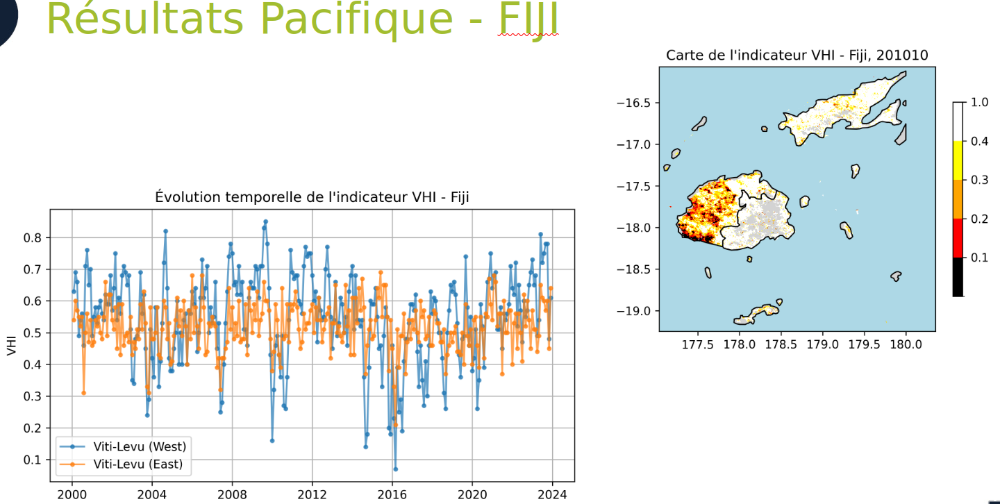
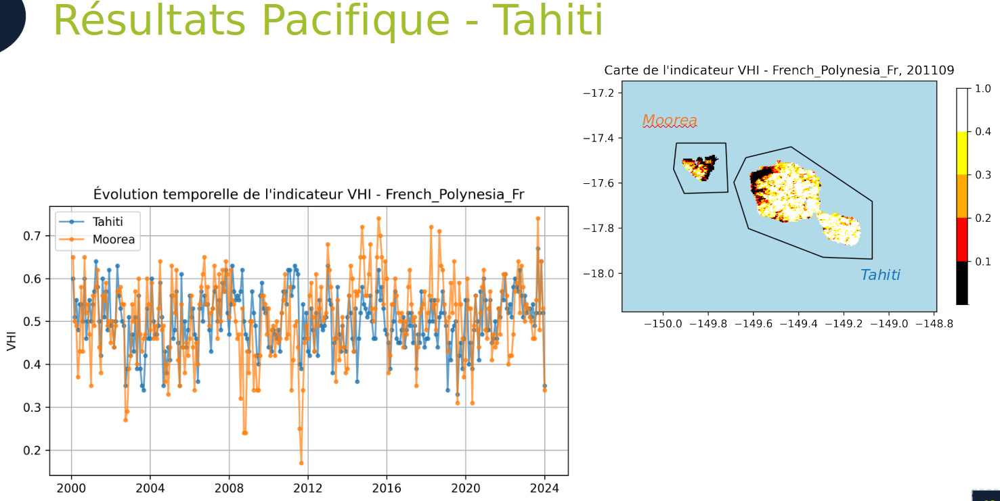
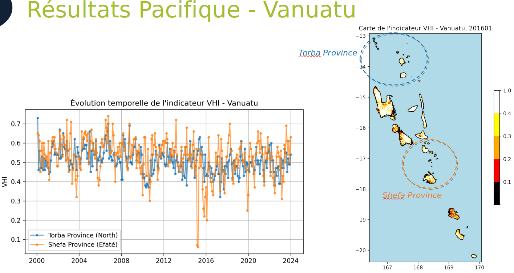
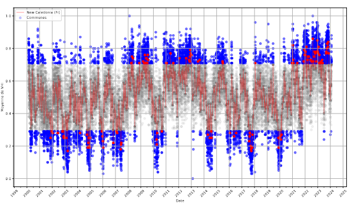
3.2.2 Proposition pour la valorisation des résultats des chaines
3.2.2.1 Catalogue STAC (SpatioTemporal Asset Catalog)
Rendre l’accès aux données facilitée via la mise en place d’un catalogue STAC (SpatioTemporal Asset Catalog) pour permettre aux utilisateurs de découvrir, explorer et accéder aux données de manière efficace.
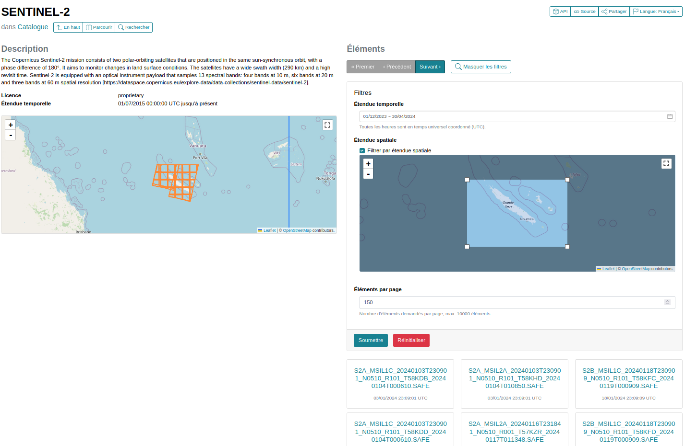 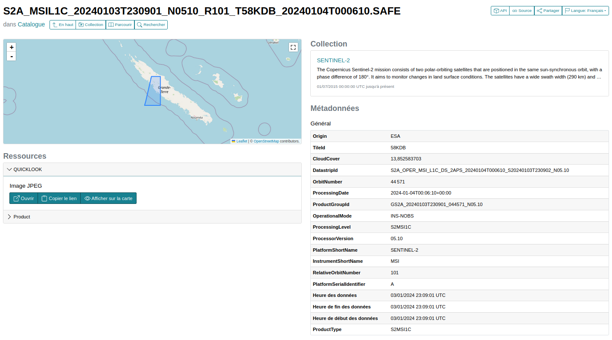
Ce type de catalogue permettrait par ailleurs de faciliter le partage et le moissonnage par d’autre plateforme comme la plateforme Data du Gouvernement de Nouvelle Calédonie et/ou le Pacifique Data Hub mis en place par la CPS.
3.2.2.2 Intégration des données dans le cube Digital Earth Pacific
La récente mise en production du DataCube Digital Earth Pacific offre une opportunité pour intégrer les données de sécheresse végétale dans ce cube. Cette intégration permettrait de faciliter l’accès et l’exploitation des données par les utilisateurs finaux, notamment les décideurs et les gestionnaires de ressources naturelles.
Des échanges avec la CPS sont prévus prochainement dans ce sens afin de déterminer les modalités de mise en oeuvre d’une telle intégration.
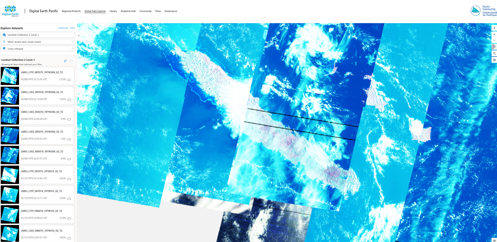
3.2.2.2.1 Développement d’une application web de consultation de données
Nous souhaitons mettre a disposition d’utilisateur une interface de consultation simplifié et intuitive pour accéder aux données du dispositif sécheresse végétale. Cette application web pourrait permettre de visualiser les données de sécheresse dans leurs dimensions temporelle et spatiale. Le développement d’un telle application nécessite l’appui de partenaires locaux (Agence rurale, Chambre de l’agriculture de Nouvelle-Calédonie) pour définir les fonctionnalités à prévoir en cohérences à leurs besoins spécifiques et soutenir financièrement le ce dispositif.

3.2.3 Livrables
- Etude gapfilling Landsat 7 Section 4.4.1
- Etude pour le choix du DataCube (GEE, Sentinel Hub, Data-Terra, Digital Earth Pacific) \(\ref{sec-datacube}\)
- Etude de faisabilité d’intégration des produits CHIRPS et SMAP dans la chaine Alerte sécheresse \(\ref{sec-chirps}\)
- Etude pour l’intégration du capteur VIIRS en remplacement de MODIS \(\ref{sec-decoModis}\)
- Document d’aide au contrôle qualité des données des chaines Section 4.5
- Présentation PGRSC (OperationalVegetationDroughtProcessing_PGRSC_Neuhauser_et_al_2023) \(\ref{sec-pgrsc}\)
- Code source
- chaine locale (documentation d’exploitation et documentation de code associées)
- chaine globale (documentation d’exploitation et documentation de code associées)
- chaine alerte (documentation d’exploitation et documentation de code associées)
- chaine prévisionnelle - MFNC (documentation d’exploitation et documentation de code associées)
- code source du calcul SPI et SPEI avec GEE via l’utilisation des données du programme CHIRPS (documentation de code associées)
- Données/fichiers produits en continu
3.2.3.1 Nombre de fichiers produit à ce jour
| Indice/indicateur | Source | Fréquence | Nombre de fichiers |
|---|---|---|---|
| NDVI/NDWI | Landsat 7 8 9/Sentinel 2 | par décade | 4816 |
| LST | MODIS | par décade | 1724 |
| LST | MODIS | par mois | 577 |
| SwI | ASCAT | par jour | 6102 |
| SwI | ASCAT | par mois | 205 |
| VHI | chaine global | par decade | 864 |
| VHI | chaine global | par mois | 290 |
| VAI | chaine locale | par decade | 4020 |
| MAI | chaine alerte | par mois | 206 |
Le volume de stockage nécessaire à la production de l’indicateur sur la Nouvelle-Calédonie a été estimé dans Figure 8
3.2.4 Réunions et échanges
- 3 COPILS
- 2 restitutions des études réalisées
- 15 Ateliers de travail
- 1 réunion avec le conseil Scientifique de l’OEIL
- 3 visio-conférences avec les partenaires de la région pacifique
3.2.5 Restitutions publiques
Une présentation de la chaine a été faite à la conférence du 27 Novembre au 1 Décembre 2023 à Fiji - PGRSC: An Operational Vegetation Drought Processing Chain based on Google Earth Engine satellite imagery and meteorological products. Cette conférence a retenue l’attention de 250 participants. Le contenu de la présentation est disponible en annexe \(\ref{sec-pgrsc}\)
4 Annexes
{{< pdf ressources/conventions/231205_Convention.pdf >}}4.1 Documentation des chaines de traitement
4.2 Documentation des chaines de traitement
================================================================================ Vegetation Drought Index Forecast Program (R version) ================================================================================
Author: Alexandre Peltier Contact: alexandre.peltier@meteo.fr
================================================================================ Program Description ================================================================================
This program generates vegetation drought index forecasts for New Caledonia based on rainfall measurements from previous months and Global Drought Observatory (GDO) seasonal forecasts. The forecasts are generated using statistical models implemented in R.
================================================================================ Required R Packages ================================================================================
The program requires the following R packages to be installed:
- ncdf4
- tidyr
- dplyr
- forcats
- ordinal
- sp
- gstat
- spacetime
- rgdal
- rgeos
- maps
- mapdata
- mapproj
- maptools
- sf
- curl
- rvest
- rlang
You can install these packages using the install.packages() function in R.
================================================================================ Useful Functions ================================================================================
The program includes several custom functions for handling data retrieval from FTP servers, data processing, and modeling. These functions are documented within the code.
================================================================================ Data Sources and Repositories ================================================================================
- GDO Data: Retrieved from the European Commission’s Joint Research Centre (JRC) Drought Observatory datasets.
- OKAPI Data: Retrieved from the French Meteorological Service (Météo-France) FTP server.
- Remote Sensing Data (VHI): Retrieved from a local repository.
- Statistical Models: Ordinal logistic models are used for forecasting drought indices.
================================================================================ Input Data Files ================================================================================
The program requires the following input data files:
- VHI Data: Monthly Vegetation Health Index (VHI) data for New Caledonia.
- GDO Data: Global Drought Observatory (GDO) seasonal forecast data.
- OKAPI Data: Standardized Precipitation Index (SPI) data.
- Communal Contours Shapefile: Defines the boundaries of municipalities in New Caledonia.
- Mask File: Used for calculating the remote sensing index.
================================================================================ Output Data Files ================================================================================
The program generates the following output data files:
- Model Inputs: CSV file containing input data for statistical models.
- Forecast Probabilities: CSV file containing forecast probabilities.
- Vegetation Indices: CSV file containing vegetation drought indices.
- Rainfall Indices: CSV file containing rainfall indices.
================================================================================ How to Run the Program ================================================================================
- Ensure that all required R packages are installed.
- Make sure that the necessary input data files are available.
- Run the R script “Vegetation_Drought_Index_Forecast.R”.
================================================================================ Disclaimer ================================================================================
This program is provided as-is, without any warranty, expressed or implied. The author is not responsible for any damages or losses arising from the use of this program.
================================================================================
4.3 Dépendances python des chaines version 1.0.0
4.4 Etudes réalisées
4.4.1 Etude gapfilling Landsat 7
L’étude réalisée sur le gapfilling des données Landsat 7 a permis de mettre en évidence l’efficacité de la méthode de gapfilling utilisée pour combler les données manquantes. Les résultats obtenus montrent une amélioration significative de la qualité des données après gapfilling. Les images obtenues après gapfilling présentent une cohérence spatiale et temporelle satisfaisante, ce qui permet d’obtenir des indicateurs de sécheresse plus fiables et précis.
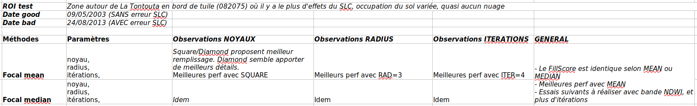  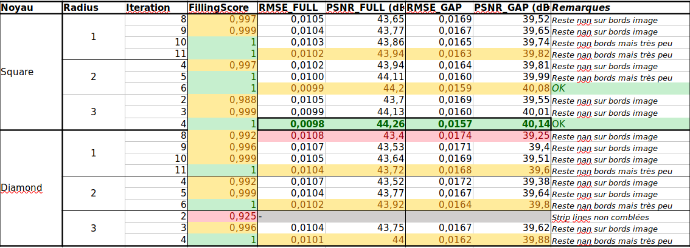 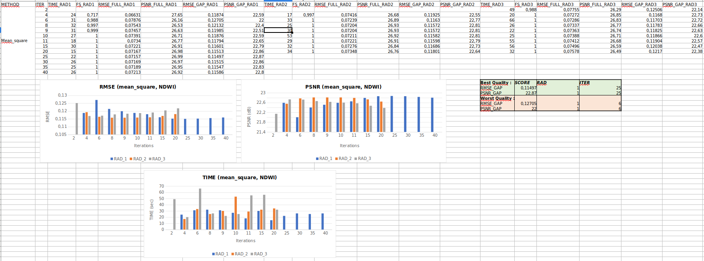 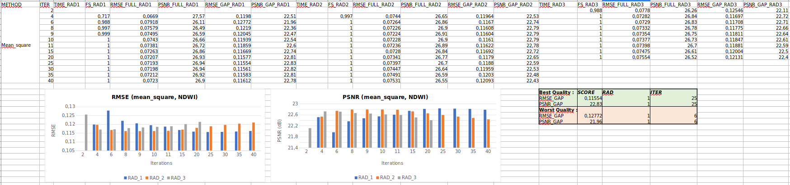 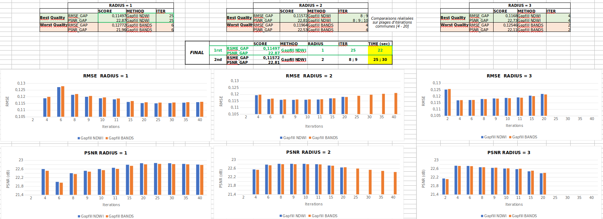 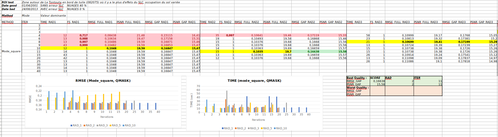 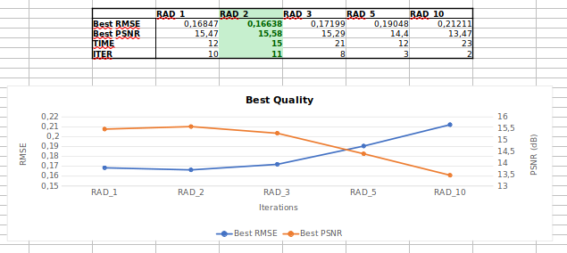
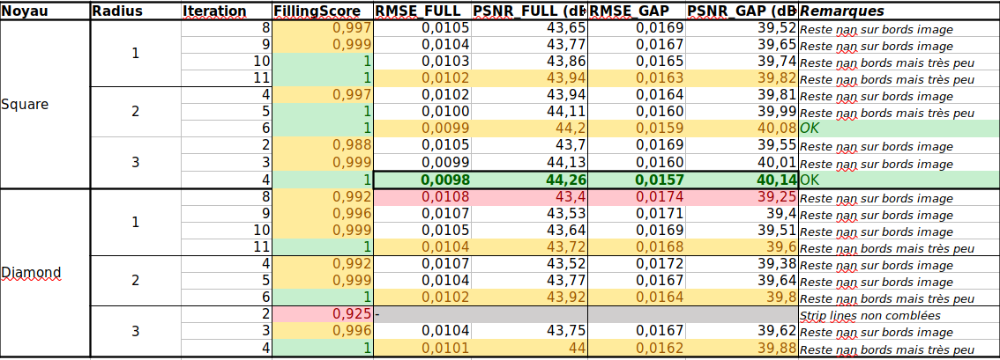 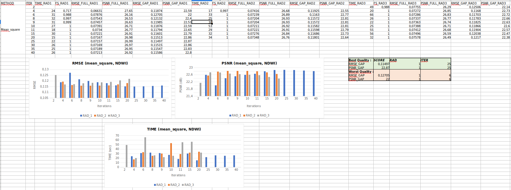 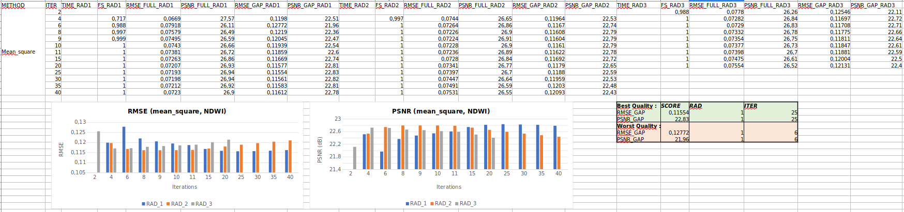 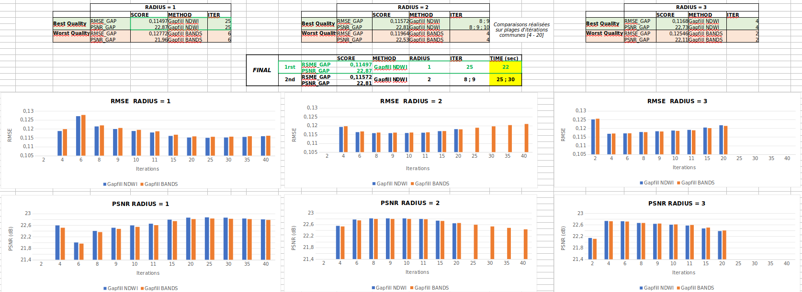 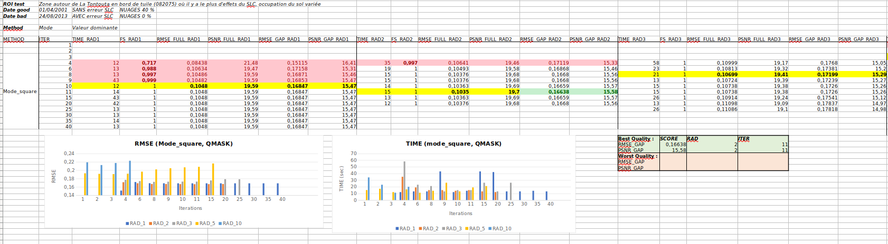 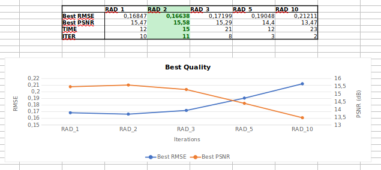
4.5 Aide au contrôle qualité des données des chaines
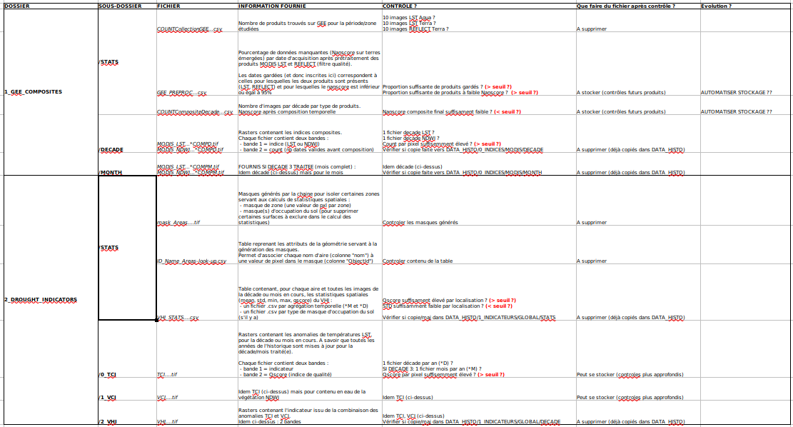
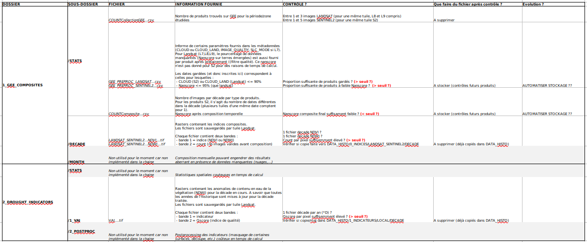
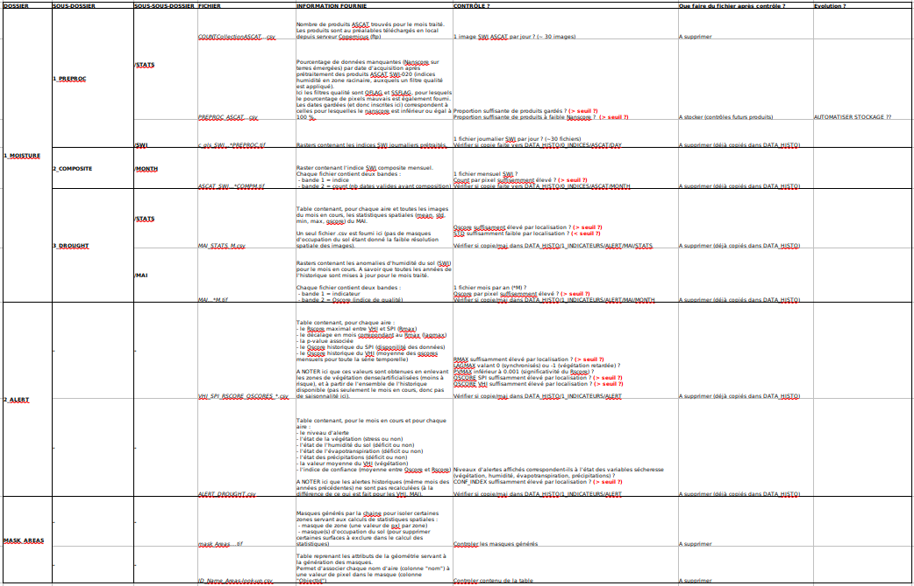